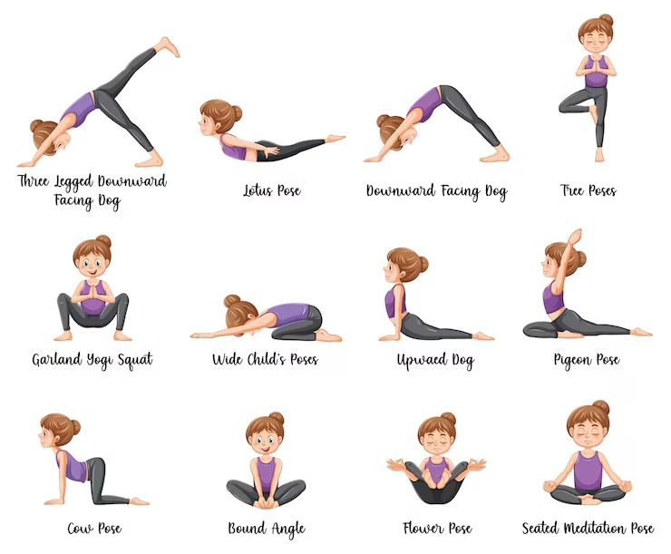

2. Vinyasa Yoga What it is: Vinyasa (pronounced vin-yah-sa) is one of the most popular styles today. It's known for its dynamic, flowing sequences that link breath to movement. A Vinyasa class is like a graceful dance, where you smoothly transition from one pose to the next in sync with your inhales and exhales. The sequence of poses often varies from class to class. Who it's great for: People who enjoy a faster pace, those looking for a good cardiovascular workout, and anyone who gets bored with repetitive routines. Primary Benefits: * Builds full-body strength and endurance. * Improves cardiovascular health. * Enhances coordination and balance.

3. Ashtanga Yoga What it is: Ashtanga is a rigorous and physically demanding style of yoga. It consists of a specific, unchanging sequence of postures that the student must master in order. It's a disciplined practice that synchronizes breath with movement to produce internal heat, designed to purify the body. Who it's great for: Experienced yogis, athletes, and individuals seeking a structured, challenging, and disciplined practice. Primary Benefits: * Significantly increases stamina and strength. * Improves muscle tone and purifies the body through sweat. * Develops mental focus and discipline.

4.Iyengar Yoga What it is: Named after its founder, B.K.S. Iyengar, this style is all about precision and alignment. Poses are held for longer periods to focus on the exact anatomical details of each posture. Iyengar yoga is famous for its use of props like blocks, straps, bolsters, and blankets to help students achieve perfect alignment safely, regardless of their flexibility. Who it's great for: Beginners, perfectionists, people with injuries, and anyone wanting to deeply understand body mechanics Primary Benefits: * Corrects posture and improves body alignment. * Increases body awareness and stability. * Safely builds strength and flexibility, making it therapeutic for many conditions.

5. Bikram Yoga (Hot Yoga) it is: Bikram Yoga consists of a specific sequence of 26 postures and two breathing exercises, always performed in the same order. The key feature is that classes are held in a room heated to about 40°C (105°F) with high humidity. This intense heat is believed to warm the muscles, allowing for deeper stretches and promoting detoxification through sweat. Who it's great for: Those who love a challenging workout, enjoy routine, and aren't afraid to sweat—a lot! Primary Benefits: * Improves flexibility due to the heated environment. * Promotes detoxification through heavy sweating. * Builds mental fortitude and concentration.

6.Yin Yoga What it is: Yin Yoga is a slow-paced, meditative style where poses are held passively for long periods—typically 3 to 5 minutes or even longer. Instead of targeting muscles, Yin yoga focuses on stretching the deep connective tissues like ligaments, tendons, and fascia. The practice is quiet and introspective. Who it's great for: Athletes with tight muscles, people seeking to increase flexibility, and anyone needing a meditative, calming practice. Primary Benefits: * Dramatically increases flexibility and joint mobility. * Calms the nervous system and reduces stress. * Encourages mindfulness and patience.

7. Restorative Yoga What it is: The goal of Restorative Yoga is deep relaxation. This gentle, healing practice uses a wide array of props—bolsters, blankets, blocks—to completely support the body in every pose. With the body supported, you can release all tension and allow your nervous system to rest and reset. You might only do 4-5 poses in an entire class. Who it's great for: Absolutely everyone, especially those recovering from illness or injury, or anyone feeling stressed, anxious, or burnt out. Primary Benefits: * Induces a state of profound relaxation. * Soothes the nervous system and lowers cortisol (stress hormone) levels. * Promotes healing and mental tranquility.